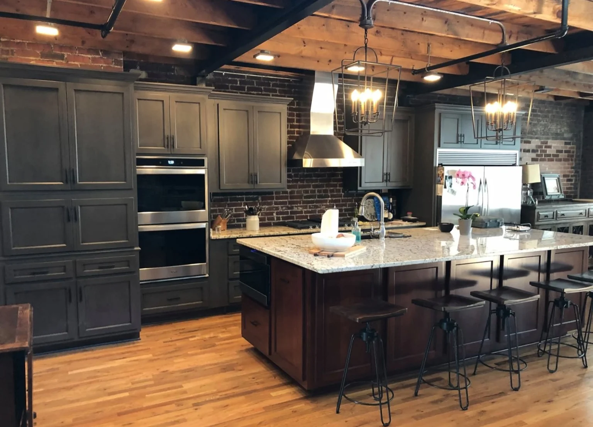
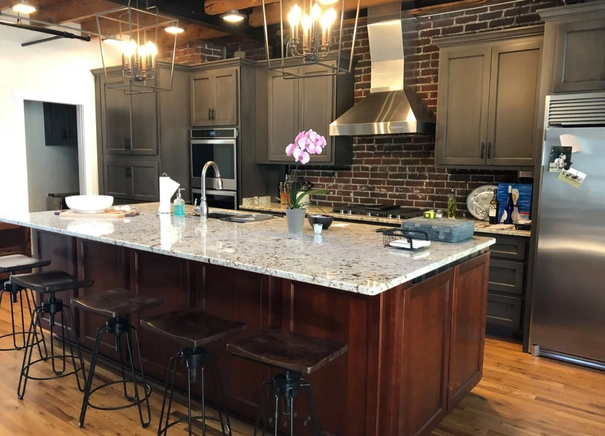
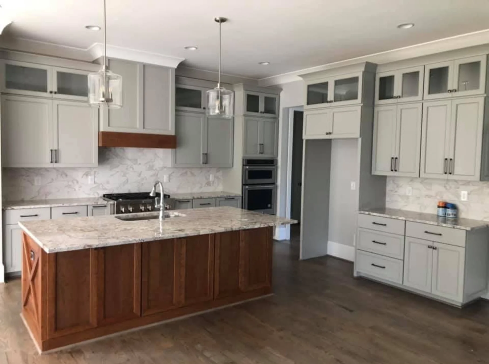

Custom Cabinetry & Renovations · Est. 1998
Cabinetry built
for your space.
T-Squared is known for careful craftsmanship and practical guidance for kitchens, vanities, built-ins and renovations. Quality should be something you can appreciate every day.

Custom cabinetry
Kitchens, vanities & built-ins
Repairs & renovations
Existing cabinets, updated
Local service
Winston-Salem & Mocksville Local
Every Space has its look
Cabinetry by room.
Kitchens, vanities and built-ins. See the work. Then decide what your project needs.

PROJECT PHOTOGRAPHS
A closer look at the work.

SHOP STANDARDS
It comes down to the details.
Cabinet lines, door and drawer alignment, trim and a tidy installation all matter. You can see the difference in the finished work.
Some projects call for custom construction. Others are a good fit for a quality cabinet line.
Custom cabinetry ↗OTHER SHOP WORK
Cabinet lines.
CNC. Repairs.
EST. 1998
A working cabinet shop.
T-Squared has been making and installing cabinets since 1998, alongside kitchen and bathroom renovation work.
New cabinets, existing cabinets, one room or several—the work starts with a clear look at what the space needs.
About the shop
PROJECT INQUIRIES
Have a cabinet project in mind?
Tell us what you need, share the approximate measurements, or call to talk it through.